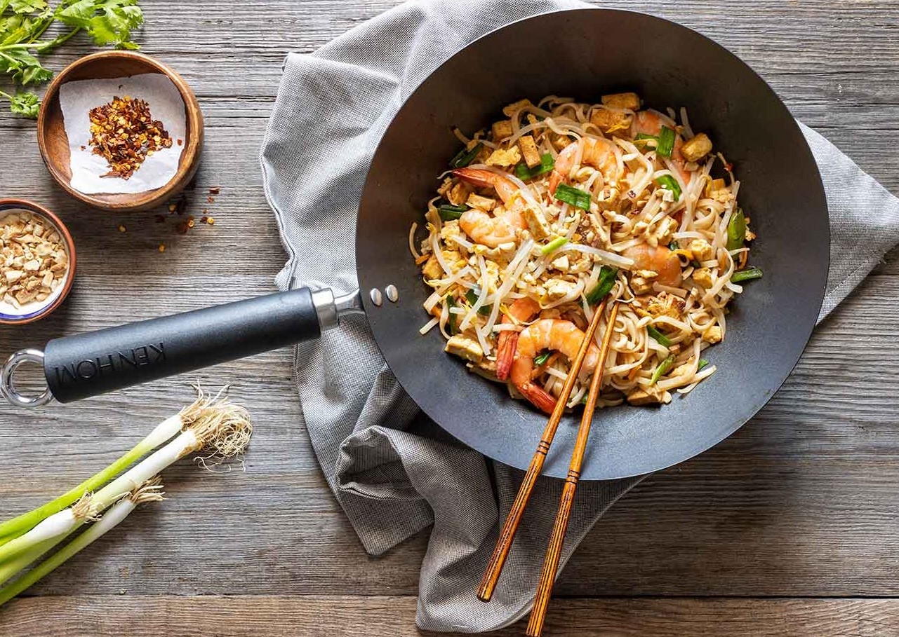
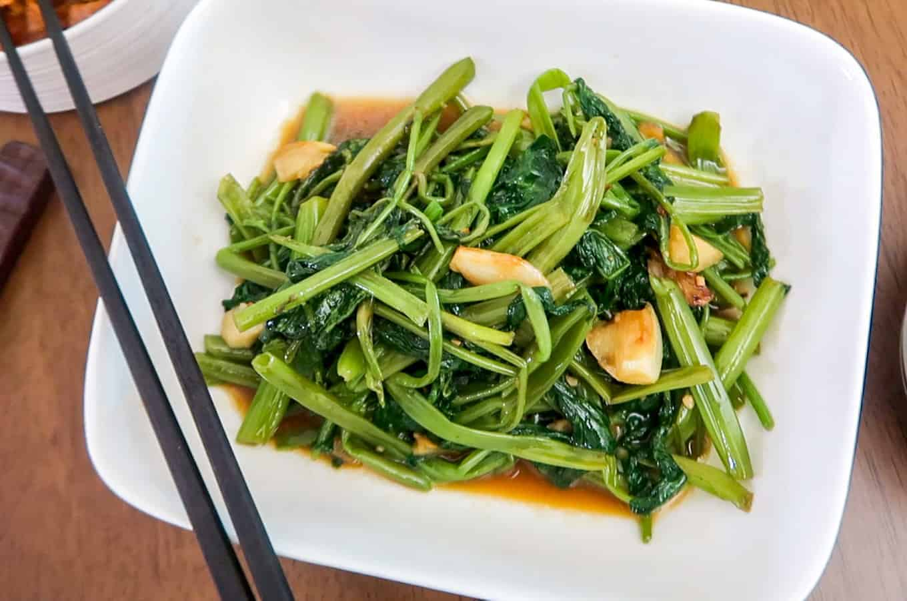

Pad Thai
Es posiblemente el plato de la gastronomía tailandesa más famoso en el extranjero. Son unos fideos sofritos con soja, tofu, huevos y cacahuetes. Es uno de los platos más populares y si no se le echa pimienta no pican
Pak Phad Bung
Es una verdura tipo espinaca que se rehoga en el wok a muy alta temperatura y se le echa salsa de ostras por encima. Si no se le echan pimientas no pica. ¡Está buenísima así que no dejéis de probarla!/p> 